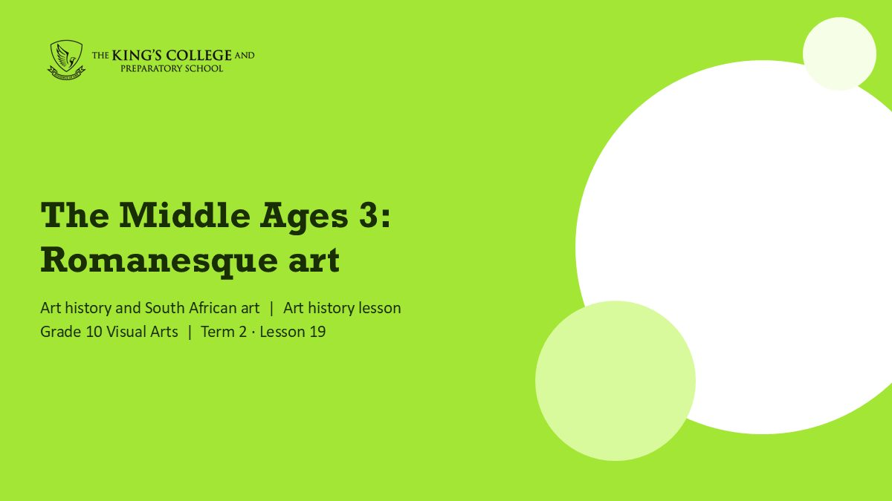

Term 2 · Lesson 19 · Art history lesson
The Middle Ages 3: Romanesque art
Start here
Today I will
- Describe the features of a Romanesque pilgrimage church
- Explain how a tympanum preaches in stone
- Find three narrative devices in the Bayeux Tapestry
Think first
How would you tell the story of an important event to people who cannot read, without using a single word?
Words to Know
| Word | Meaning |
|---|---|
| Romanesque | European architecture of about 1000–1150, 'in the Roman manner', with round arches and heavy stone vaults. |
| Pilgrimage | A journey to a holy place, such as a church holding relics of a saint. |
| Tympanum | The semicircular area above a church doorway, often filled with sculpture. |
| Portal | A large, decorated doorway into a church. |
| Narrative | Telling a story through a sequence of images. |
Slides

Notes
Pilgrimage churches, thick walls, round arches and carved portals; the Bayeux Tapestry as narrative.
The Romanesque church
- Round arches: Romanesque means 'in the Roman manner': round arches and stone barrel or groin vaults.
- Thick walls, small windows: Heavy stone roofs need massive walls and piers, so interiors are dark and solemn.
- Pilgrimage plan: Sainte-Foy at Conques has a Latin-cross plan with an ambulatory and radiating chapels for crowds of pilgrims.
- Carved portals: The Last Judgement tympanum at Conques shows heaven on Christ's right and hell on his left: a sermon in stone.
The Bayeux Tapestry as story
- What it is: Wool embroidery on linen, about 70 m long, c. 1070s, telling the Norman conquest of England in 1066.
- Continuous narrative: Scenes flow from left to right without frames, so the eye reads it like a comic strip.
- Dividers and labels: Trees and buildings separate scenes; short Latin captions name people and places.
- Borders: Upper and lower bands with animals and figures frame the story and sometimes comment on it.
- Point of view: It is told from the winners' side, to justify William of Normandy's claim to the throne.
Remember
Romanesque art speaks to people who could not read: in stone over the door and thread along the wall.
Practical
You need: History booklet, VJ
Reading the Bayeux Tapestry
- Describe: title, date (c. 1070s), medium (wool embroidery on linen), size and subject.
- Choose one section and describe what happens in it in order.
- Analyse: find three narrative devices (for example direction of movement, dividers, captions, gestures, borders).
- For each device, explain its effect on the viewer.
- Interpret: how does the tapestry present William and Harold differently?
- Opinion: is it history, propaganda or both? Give one reason.
Test yourself
- Identify the sculpted area above the doorway of a Romanesque church.
- Explain why Romanesque churches have small windows.
- Explain two narrative devices used in the Bayeux Tapestry.
Show answers
1. The tympanum. 2. Thick walls were needed to carry the heavy stone vaults; large openings would weaken them. 3. Any two: continuous narrative from left to right, trees or buildings as scene dividers, Latin captions, gestures that point to the action, borders that frame and comment.
Finished early?
Mini tapestry strip
Tell a short story the way the Bayeux Tapestry does.
- Draw a long thin strip across your VJ page with a narrow border above and below.
- Tell a three-scene story about your morning, moving from left to right with no frames.
- Separate the scenes with a tree or a building.
- Add a short caption above each scene.